|
Here are a few things everybody should keep in mind when setting up Half-Life 2:
|
|
Configuration
|
cdunde/PuG - 07 Mar 2010
|
[ Top ]
|
|
In this short tutorial we will be showing you how to quickly setup QuArK to compile maps
for Valve's Half-Life 2. Please remember: to be able to create maps for Half-Life 2, or any
of its modifications you must have the latest version of the Source SDK downloaded and installed for the necessary build tools & materials. This can be downloaded from Steam itself, under the Tools tab. Also, here is a link that list all of the games entities and how to use them:
HL2 Entities.
|
Part 1 - Setting up QuArK to work with Steam
First we need to setup QuArK to work with Steam. Start QuArK, and you should be
greeted with the 'QuArK Explorer' panel. The QuArK Explorer allows you to define
which game environment you wish to work in, as well as doing many other things.
We need to select the game we want to map for. We do this by simply going to the
Games button located on the top right of the Explorer panel, once pressed it will
present you with a drop list of all the currently available games, select
Half-Life 2 as shown in the screen shot to the right.
Next we need to setup QuArK to work with Steam, to do so go back to the Games
button and press the Configuration button at the bottom of the list.
Once selected a new window will be opened called Configuration . Select the item
Steam selected on the left navigation panel; it's located under the Games folder. We now need
to fill out some of the necessary settings on the right of the Configuration panel.
|
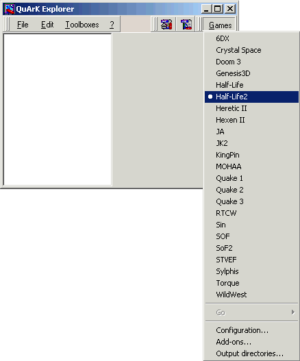
|
|
Click on the button to the right of the first field and locate the folder
in which you have installed Steam. If you used the default when you installed Steam,
this should be:
- C:/Program Files/Valve/Steam
In the next field, Enter your Steam account name. This is used to locate files in the
Steam directory.
The other options can be changed to alter the way QuArK works with Steam. The default
settings are probably best.
|
|
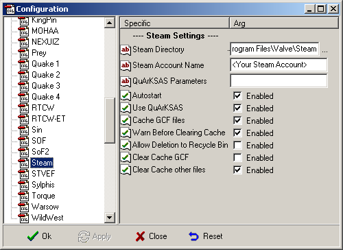
|
|
Part 2 - Setting up QuArK to work with Half-Life 2
In this section we will quickly go over how to setup QuArK to work with Half-Life 2.
Go to the Configuration panel of Half-Life 2 (described above for Steam).
To start with we must select which of the Half-Life 2 games we wish to work with. To
do so simply use the drop down menu to the right of the 'Steam game' setting
(under the Game Settings tab). This should give you a selection of several games, for
this tutorial we are going to be working with Counter-Strike: Source, so select:
"Counter-Strike: Source"
(Tip: You may want to increase the width & height of the Half-Life 2 window for when
we use the 'Run Half-Life 2' option later on in the tutorial e.g. '-window -width
1280 -height 1024'.)
All other relevant settings are set to "*auto*" on default, so you don't need to
change those. However, should you ever want to, here's a few pointers:
- Set the Game directory to the directory containing all the game's files, relative to
the Steam directory.
- Set the 'Steam App Id' to the Application ID of the game you want Steam to run. Look
here for a complete list of all the application IDs.
- Set the Game data directory to the directory in which the game's data is located. For
Counter-Strike: Source, it's 'cstrike'. This is the directory that contains the 'bin'
folder with the executable, and the 'GameInfo.txt' file, and is the last directory
of the Game directory setting.
- Set the Source SDK Bin directory to the directory containing the SDK tools for that
game. This directory should contain the compilers.
- Set the Compiler version setting to the type of compiler the game uses.
The compiler settings should work just fine, but if they need to be changed and you
are unsure on any of the settings, hold your mouse cursor over the white
box and it will come up with a quick example.
Note: If you change to any other game than Half-Life 2, be sure to also change the
Addons used to make sure you're not using Half-Life 2 items in other games, and that
you have that games entities available to you too.
|
|
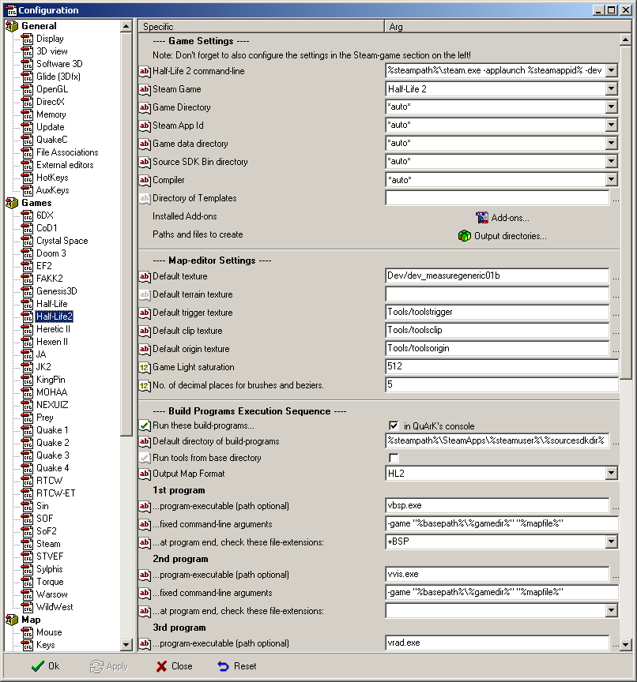
|
|
| |
Once you have finished setting QuArK to work with the HL2 compiler, simply press the 'OK' button to close the Configuration panel; this will leave you back in the QuArK Explorer.
|
|
Part 3 - Compiling
|
|
In the section above we setup QuArK to work with the HL2 compiler. Now it's time to do something more exciting.
First we need to create a new map. To do this click on the 'New Map' icon which is the leftmost button on the toolbar with the
'Games' button. You should now be confronted with the map editor itself with some pre-made structures and entities as shown below.
|
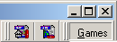
|
|
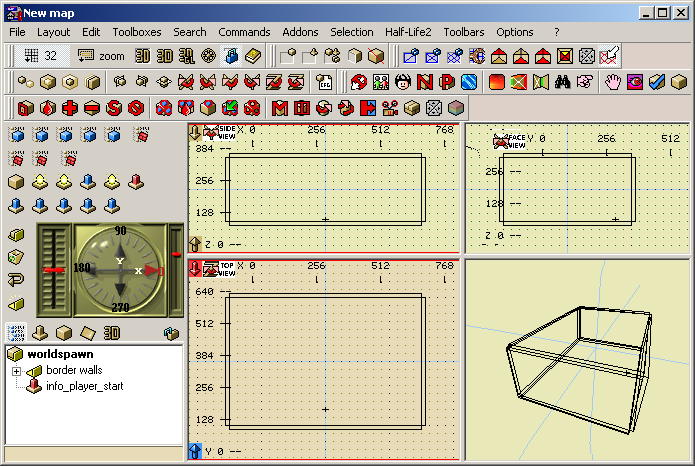
|
|
(Your QuArK Map editor may look slightly different to mine, this is because I have Quad view ports set, and the colors have been
slightly adjusted to my own personal taste.)
If we compile the map as it stands, it will work fine in game though you may not be able to spawn (only look around).
To compile the map simply go up to the 'Half-Life 2' button at the top of the page, and on the drop down list select the
'Complete Rebuild' Option.
|
|
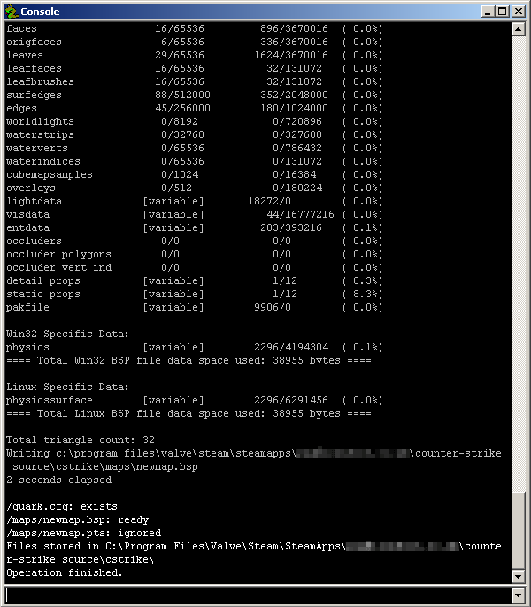
|
The QuArK 'Console' should now appear, and a text output will show the progress of the compile. Once completed you should see the
following text at the bottom of the Console window:
- /quark.cfg: exists
- /maps/newmap.bsp: ready
- /maps/newmap.pts: ignored
- Files stored in C:\Program Files\Valve\Steam\SteamApps\...\counte
r-strike source\cstrike\
- Operation finished.
The Console outputs what the Valve compiler is doing, and you should always
review the output regarding any error reports such as leaks.
With the map now compiled, you can either load up Counter-Strike: Source, and
create a server making sure you have select your map from the CS:S Map list (as
default it should be called 'newmap'); or within the QuArK Map Editor once
again press the Half-Life 2 button at the top tool bar & select 'Run Half-Life
2', this should now start CS:S, and automatically create a server with your
newly compiled map.
With the default pre-made map you will not be able to spawn with CS:S, only
join as a Spectator; and with any luck you should now be viewing a box room
with sky like the one shown below.
|
|
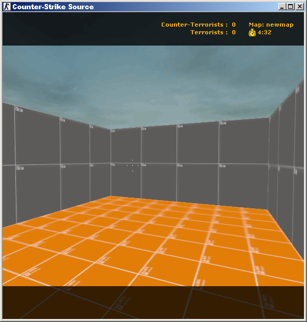
|
|
|
Misc. Info.
|
cdunde/PuG/Sven - 09 Jul 2012
|
[ Top ]
|
|
Now, start Steam and login to your Steam Account - Online / Offline
the first few times it is better to have an internet connection running.
Half-Life 2 does strange things sometimes but if you know that the game runs offline there will be no internet connection required.
Select the Source SDK from your steam game menu and double click it.
Now you should see the window shown to the right. Choose your preferred game from the "Current Game:" list and click the Close button.
You are now ready to do the rest of your Configurations for QuArK as covered above.
|
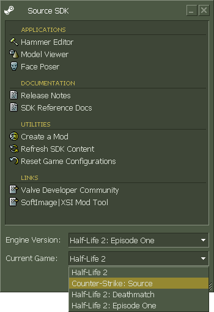
|
- A suggestion for people who are new to using Quark:
Adding '+sv_password foo' to the Half-Life command line entry in 'configuration' will
keep people that compile a map for the first time having other people popping in to play.
It's quite a shock when you compile your first map and while looking at it, someone
else suddenly appears.
- How to insert entities in HL2 maps:
Make sure you are in HL2 mode, and create a new map, then do the following:
Go to [options:configuration], and then choose Half-Life 2 under the Games section.
Where you see a button called "Add-ons", click it. You should see at least 3 items:
DataHL2.qrk, entities-base.qrk and entities-hl2.qrk. If you don't see these,
click on "Add", and then browse on your computer to where these are
(they should be in the QuArK folder, in another folder called "addons"). After you do this, you
should see two blue cube buttons in the upper left of QuArK's window. The one on
the right should be a list of entities when you click it.
- I can't see the textures inside QuArK for Half-life 2, what is wrong?
There can be many problems, here are a few thing you can try:
- The account name must be written in lower case only. User = user. - Reported by Matrikular
- Close QuArK and close Steam. Load Steam again, let it do its thing, and then start QuArK
- SDK content needs to be installed, from Steam. See 'Important Notes'.
- Everything was working perfectly, but then Steam did an update and I can't use QuArK anymore?
Refresh the Source SDK files, as described above in the 'Important Notes' section. If that doesn't work,
delete the SDK content folder, and let Steam reload them.
- When I try to compile my map, I get this error: "Unable to find gameinfo.txt." What's up?
As the error states, the compiler can't find the gameinfo.txt that goes with the game.
- Make sure all the paths are properly configured.
- Run the game at least once, so this file gets extracted.
- QuArK says, it can load some basic models, but where are they?
Go to addons folders, and plugins. Add the one called 'Half-life 2 models'.
- When I adjust the scale of a brush instead of following the grid snap
I'm finding it's adding an extra unit proportionally to the size
of the brush (e.g. +64.02, rather than +64)?
You most likely have forced the grid into a custom setting, simply change it manually back to 64.
|
|
Custom Textures
|
cdunde/Sven - 28 Apr 2009
|
[ Top ]
|
|
This section covers how to get your own custom textures to work in Half-Life 2, Half-Life 2 Deathmatch and Counterstrike Source.
It's good to know how "materials", what texture files are called, are used in the game and how they are handled by the Half-Life 2 game engine. A good place to look for information on this is the materials section of the SDK itself.
Material or texture files are split into two parts: first your texture itself, a picture of any kind of file type, which later have to be converted into the .tga file type and then into .vtf with the vtex compiler from the sdk. We'll get to that later...
The second part of our texture is the .vmt file, a script file which tells the engine how to render and handle the materials. Most settings in the .vmt file are based on variables for shaders and values which describe the material, like wood, glass, stone and so on,... it also flags the sound behavior of our texture, mostly automatically.
The first line of our .vmt file is the name of the shader that is used. depending on your computer, it can set to a default shader level, or set itself after a shader test to fit to the best result for each computer your map is running on. Shaders add reflections and such to the texture.
It's all not that easy,... well, to be honest, I haven't figured out most parts of the shader thingy yet =)
But, let's get to the part where the useful information take place, the other stuff is mentioned in the sdk section better than I could explain it. Just play around with it a little.
Choosing and Compiling your own texture
As you now know, you can use any kind of a picture to make a texture of it. There are some things to remember before you can use your texture:
- The picture has to be a .tga file before compiling at 16, 24, or 32-bits in depth /VALVE SDK
- All .TGA files must have a resolution equal to a power of 2, although the height and width can be different (i.e. 16x16, 32x32, 64x128, 128x128, 128x256, 512x512, etc.). /VALVE SDK
The compiler vtex is located in the sourcesdk/bin folder where the other map compiling tools can be found as well.
Now, if your picture matches all dependencies open one or two explorer window/s and go to:
DriveDevice:\Valve\Steam\SteamApps\YourSteamAccountName\sourcesdk\sourcesdk_content\GameType\materialsrc
Create a folder with a custom name there and save or copy your .tga file into the new folder.
|
Your second explorer window should be the path to your sourcesdk/bin folder, it's easier to drag and drop the .tga file to vtex later.
|
|
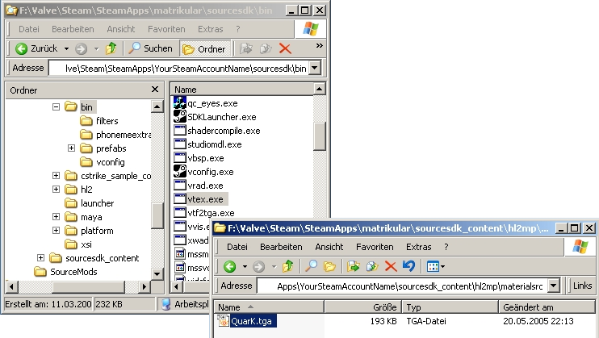
|
|
Now drag and drop your .tga file on to the vtex.exe, the following screen should look like this,...
|
| |
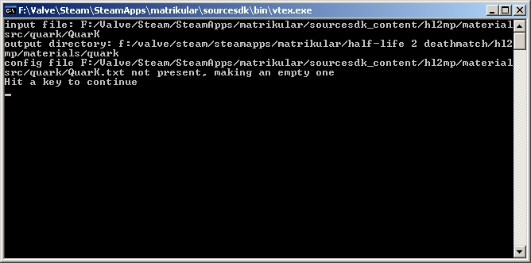
|
|
If you are not planning to build an "normal map" texture of your .tga ( I will hopefully find some time to make a tutorial on what that is soon ), drag it one more time.
|
|
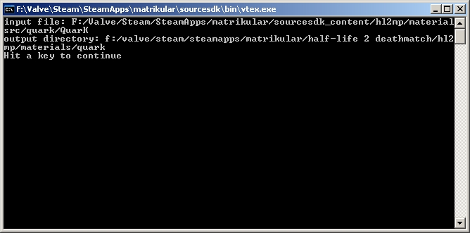
|
The .tga should be converted now and saved into
DriveDevice:\Valve\Steam\SteamApps\YourSteamAccountName\GameType\materials\YourFolderName
- Note ! You will get an error message if
- ...YourGameTxpe\materials\YourFolder
- is not present, so create it first !
The compiler made a text file now in the same folder where your .tga is. Please, read the sdk documentation on how to use this text file and what it is for.
It's time to define what kind of texture we have now.
There are a few default values which can be used, and to get ready for our .vmt file creation a good program called "VMTMak0r" needs to be mentioned. It helps to set all needed stuff in your .vmt.
Download the English version from here.
Ok, so "VMTMak0r" handles the .vtf file by drag and drop, so go in ...GameTypeFolder\materials\YourFolderName and drag and drop the .vtf file on to "VMTMak0r".
|
|
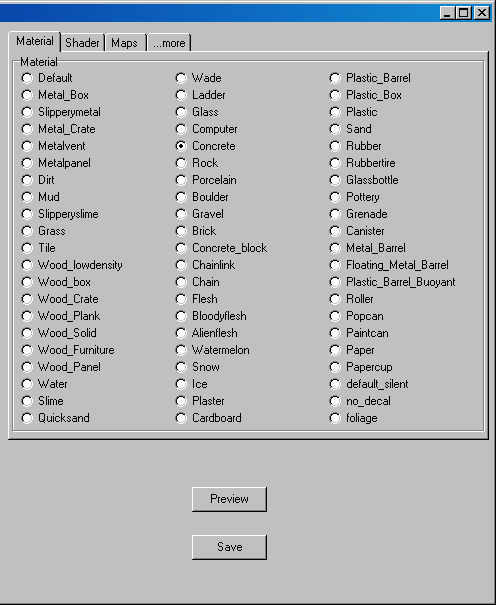
|
|
Note ! You have to preview the .vmt file in the program, otherwise you'll get an error message if you're trying to save it !
Brilliant ! Our texture is done if you set every kind of behavior you would like it to have.
If you are more into the other settings you see documented in the sdk, I'll explain them too, but for now let's just make a "default shader – metalpenal" and save it.
QuArK is waiting,...
- Start the sharpest Army Knife on Earth and open the Texture Browser
- Create a new main folder and select "in a new Addon"
|
|
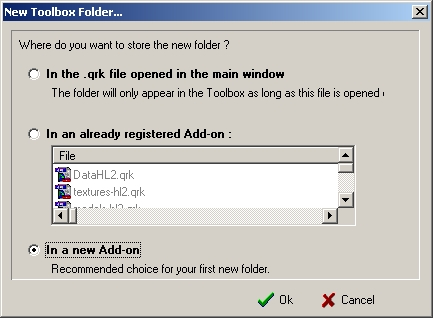
|
Give it a good name, may be your mapfilename and save it.
Note ! Sometimes it could be that you have to save the file in Quark\Addons\whatyouwant !
Okidoki,...
- Select your new main folder and make a new "texture list" in it then -> edit -> import files by "copy" or "make file links" to this texture list.
"I use copy and haven't figured out what's better, lazy me =)"
Now a file browser opens, choose the directory of your texture file, it should be something like
DriveDevice:\Valve\Steam\SteamApps\YourSteamAcccountName\GameType\materials\YourFolder
Note ! Because of a path problem I haven't figured out yet, you have to copy the .vmt and the .vtf to the main materials folder to let the game find the texture, and to prevent a black/red texture to be displayed in the game !
Done ! As you can see the texture works in the game,...
|
|
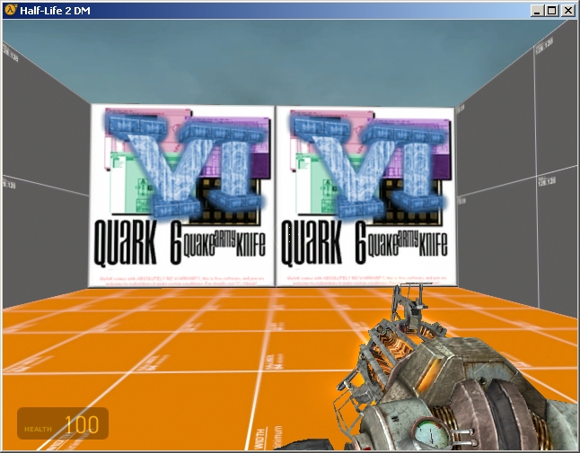
|
|
I hope this helps a bit and some of you can add one or two hints for this tutorial or will correct me
on a few points,...
I'll try to find some time to get an addon file ready where you can select all gametype textures
( css textures for hldm and vice versa )
Last thing, if you quit QuArK you'll be asked to save the changes to your addon file,...
Then a message prompts that QuArK doesn't support that right now. Just add the textures you want in your map before start mapping with the texture browser / import them again,...
Changed during update alpha3, custom textures now will be saved ! NICE, THX !
have a lot of fun
matrikular - Sven
|
|